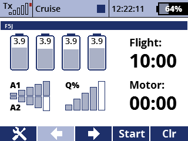

It provides its own timers implemented in Lua, and does not rely on the built-in timers. Therefore, if you want to test the app, it may be a good idea to first make a copy of your model and delete the timers you set up, to avoid duplicate time calls. The timers from the app can also be added to the Main Screen as Displayed Telemetry.
The flight timer starts when you start the motor. It counts up the motor time to 30 sec. and then another 10 sec. until the start height is recorded by the AMRT device. The flight timer is stopped by a switch. You can adjust the flight time as you wish before the flight, and you can also adjust it during the flight if you want to come back sooner and practice a landing after finding lift.
The app can show cell voltages from a MULi6S LiPo battery sensor and give a low battery warning. It also works with an altimeter to call out the start height and get altitude calls during flight. Using an altimeter is not allowed under the F5J rules, but the height calls can be turned off with a switch to comply with the spirit of the rules.
Scores can be saved and edited, so you can keep an electronic score card during contests.
This app will be added to the bottom of the Main Menu.
You can download the source code from the SoarJETI GitHub repository.